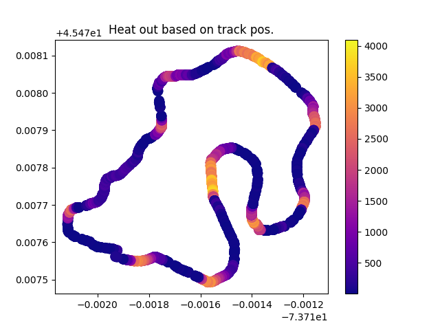
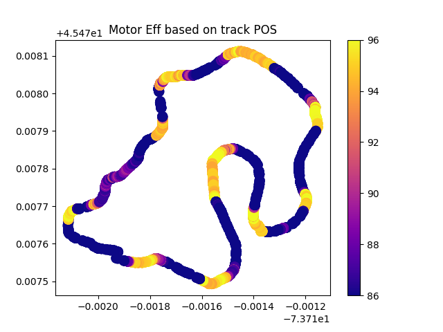
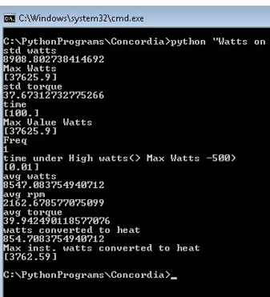
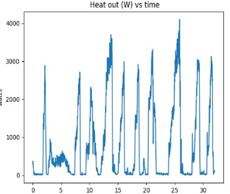
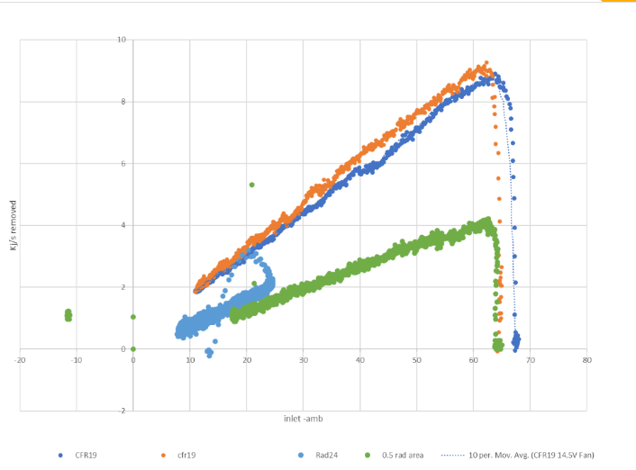
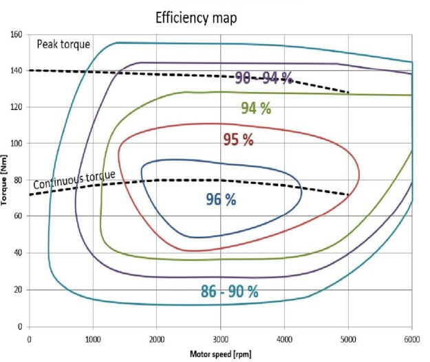
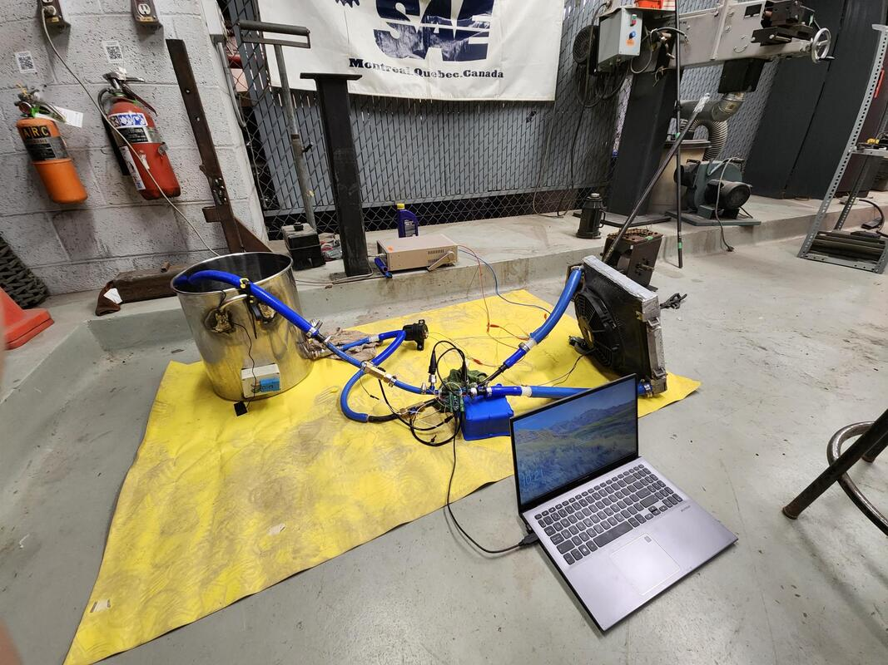
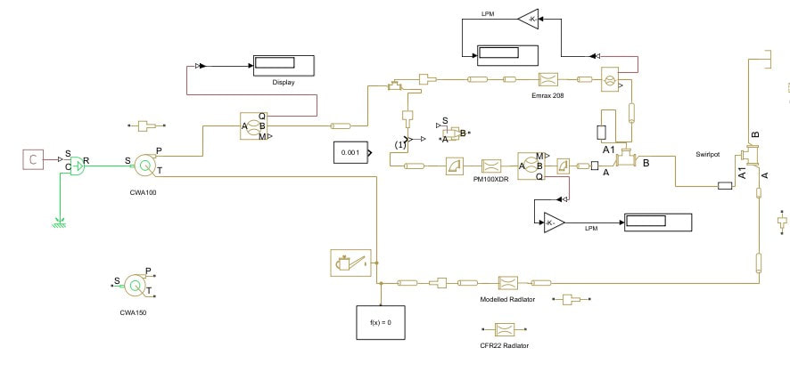

I served as Cooling Lead during my first year on Concordia's electric Formula team, owning the thermal design for the team's first competitive EV with no prior baseline to work from. Following the transition from combustion to electric, the cooling system needed a complete redesign for drastically different requirements and the result came in over 50% lighter than the combustion era design.
To close the gap between modelling and reality I designed and integrated a real time DAQ using thermistors and Hall effect flow sensors, enabling instantaneous kW level heat rejection measurement.
These images show examples of the design work completed for the vehicle cooling system. The primary objective was to quantify the car’s cooling requirements to ensure it could reliably complete 22 laps at the Michigan competition without overheating. Once the thermal demands were understood, the next challenge was selecting an off the shelf radiator capable of meeting those requirements, which proved difficult due to the lack of published performance data for most radiators. To overcome this, we designed and built a custom radiator test rig to experimentally characterize radiator performance under controlled conditions. In parallel, we used MoTeC to analyze real world vehicle data, including coolant temperatures, flow rates, and ambient conditions. We also developed MATLAB simulations to evaluate different cooling scenarios, validate experimental results, and optimize radiator selection and flow requirements.







Cooling design work: custom radiator test rig characterization, MoTeC telemetry analysis (coolant temperatures, flow, GPS mapped heat output and motor efficiency), and MATLAB cooling scenario studies used to size the system for the Michigan endurance event.
Methodology
- Constructed a custom radiator test rig for experimental characterization
- Analyzed real world vehicle data via MoTeC, including coolant temperatures and flow rates
- Developed MATLAB simulations to evaluate cooling scenarios and optimize radiator selection
MATLAB Modelling
This figure shows our initial MATLAB model. In the first iteration, we attempted to model every diameter reduction and bend in the tubing network. This required assigning individual loss coefficients and friction factors to each section of the loop. Due to limited instrumentation and the difficulty in accurately characterizing minor loss coefficients for each feature, this approach introduced significant uncertainty. The radiators and motor/inverter assemblies were experimentally characterized to obtain pressure drop as a function of flow rate. These component level pressure drop curves were implemented directly into the model. It was assumed that their hydraulic behavior remained invariant across the operating range. The objective of this model was to quantify the distribution of pressure losses throughout the loop and support pump selection, specifically between the CWA100 and CWA150. However, when validated against full loop testing, the model exhibited significant error and did not accurately predict system behavior. The second figure shows a simplified system level model developed to directly address pump selection. Instead of resolving individual geometric losses, the complete cooling loop was experimentally tested to obtain total pressure drop versus flow rate. This system curve was then implemented in MATLAB and intersected with the pump performance curves to determine the required operating points. The target flow rate was defined by the thermal analysis, and the model was used to determine the operating conditions necessary for each pump to achieve that requirement.

Initial detailed loss model (every bend and diameter change resolved individually). It carried too much uncertainty in the minor loss coefficients, which motivated the simplified system level curve used for final pump selection.